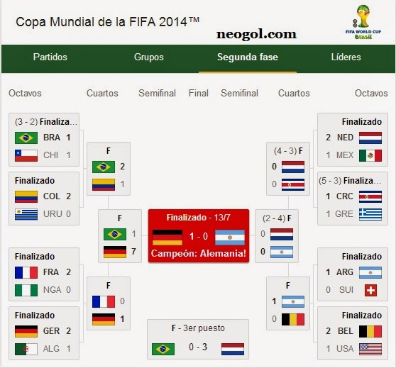
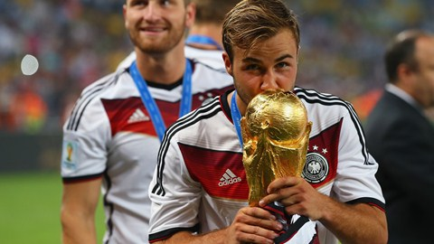

El Mundial de Brasil de 2014 fue la edición número 20 de la CMF., y la segunda vez que se celebra en dicho país. La duracion del torneo fue del 12 de junio al 13 de julio. Participaron 202 países a través de sus respectivos equipos para la clasificación, y así determinar las 31 selecciones participantes en el torneo, además del anfitrión (Brasil).
Los participantes se dividieron en 8 grupos de 4 participantes cada grupo, en donde cada participante iría a un grupo por sorteo, excepto Brasil, que por ser la organizadora anfitriona le correspondía una plaza en el grupo A.
| Grupo A | Grupo B | Grupo C | Grupo D | Grupo E | Grupo F | Grupo G | Grupo H |
|---|---|---|---|---|---|---|---|
| Brasil | Países Bajos | Colombia | Costa Rica | Francia | Argentina | Alemania | Bélgica |
| México | Chile | Grecia | Uruguay | Suiza | Nigeria | Estados Unidos | Argelia |
| Croacia | España | Costa de Marfil | Italia | Ecuador | Bosnia y Herzegoniva | Portugal | Rusia |
| Camerún | Australia | Japón | Inglaterra | Honduras | Irán | Ghana | Corea del Sur |

Esta es la lista de algunos de los candidatos a ganar el trofeo:
Por otro lado estas fueron las posiciones finales del torneo:
El jugador que recibió el Balón de Oro fue Lionel Messi

Para ver la celebración del ganador del Mundial pulsa en el siguiente enlace: Celebración del Ganador del Mundial
Para ver más información sobre el Mundial pulsa en la foto: